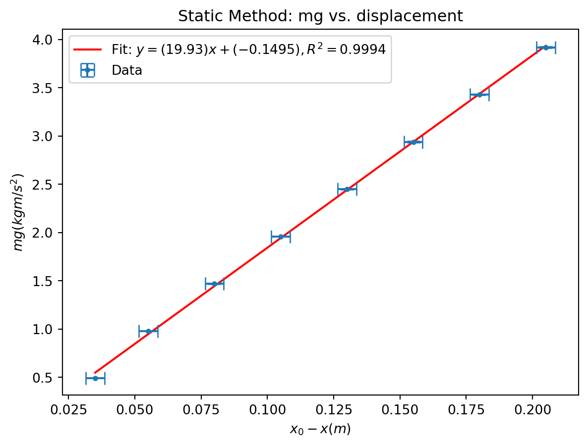
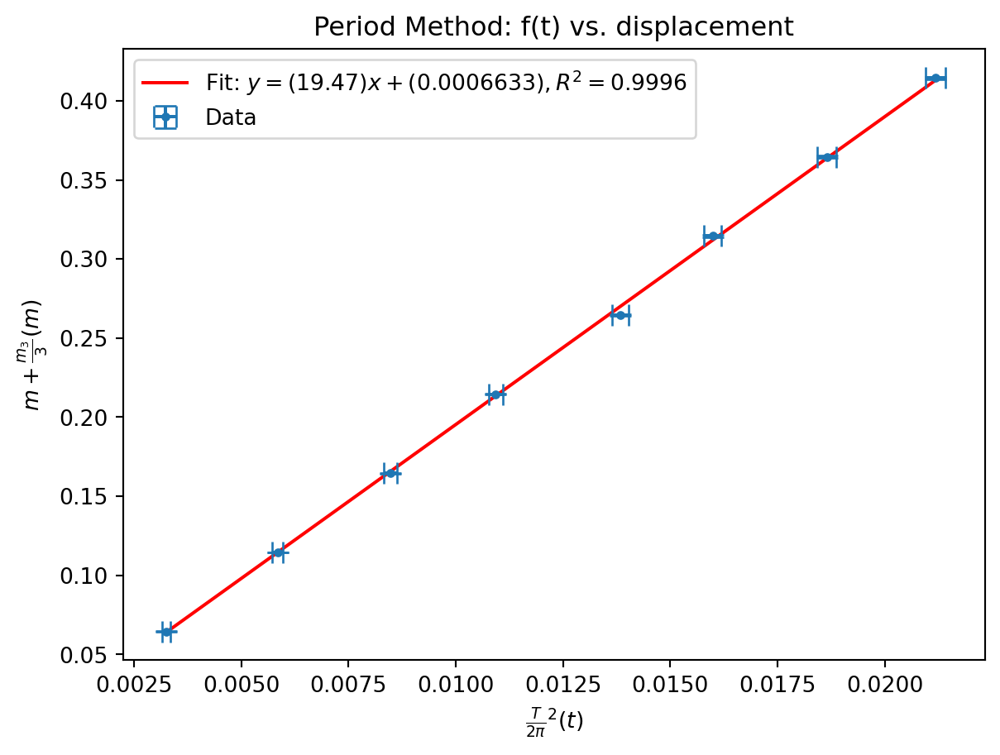

import warnings
warnings.filterwarnings("ignore", category=FutureWarning, module="uncertainties")
import matplotlib.pyplot as plt
from uncertainties import ufloat
import numpy as np
from scipy import odrBryce Tabangcura - Lab Week 2
Lab partner: haven bunter-gooley
Experiment 1
Aim
The aim of this experiment is to measure the spring constant of a spring. And to highlight the connection between the static displacement of a spring, to its stiffness.
Method
We can start with the relationship of \[F = kx\] Where F = Force, k is the spring constant and x is displacement.
Dangle the mass upheld by the string and the weight of the mass will be equal to the force of the spring on the mass. So \(mg = F\)
So extrapolating. for a mass positioned in the air, \(mg = k(x_0 - x)\) So plotting on a graph, \(y = mg\), \(x = (x_0-x)\).
The gradient of this graph will be equal to k.
Results
The entire experiment was written in python, so as to make the process easier to replicate than a graphical spreadsheep processor like excel.
Lets start with our basic imports. we also ignore warnings (uncertainties has some change and I want to ignore it)
We will also define a gravity constant. We will assume that this has no uncertainty.
g = 9.796And also a helper function. This helper function, from a list of ufloats for some x and some y will return the slope intercept and r_squared.
def fit_odr(x, y):
x_nom = [v.nominal_value for v in x]
x_err = [v.std_dev for v in x]
y_nom = [v.nominal_value for v in y]
y_err = [v.std_dev for v in y]
model = odr.Model(lambda p, x: p[0] * x + p[1])
data = odr.RealData(x_nom, y_nom, sx=x_err, sy=y_err)
out = odr.ODR(data, model, beta0=[1, 0]).run()
slope = ufloat(out.beta[0], out.sd_beta[0])
intercept = ufloat(out.beta[1], out.sd_beta[1])
y_pred = out.beta[0] * np.array(x_nom) + out.beta[1]
ss_res = np.sum((np.array(y_nom) - y_pred) ** 2)
ss_tot = np.sum((np.array(y_nom) - np.mean(y_nom)) ** 2)
r_squared = 1 - ss_res / ss_tot
return slope, intercept, r_squaredSince we needed x_0, we measured it. the spring length uncompressed is equal to 30 +/- 0.25cm. for a spring, we were only confident measuring from a ruler in sizes of half a centimeter, so taking half of that as the uncertainty.
spring_length_uncompressed = ufloat(30, 0.25)
milligrams_over_weight = (232 + 140 + 173 + 154) / 8
print(milligrams_over_weight)87.375From the above, we also get an average of 87.375 milligrams overweight. This was measured by measuring each weight 2 at a time (the scale doesn’t support heavier), and then adding the total and averaging it over all the weights which is 8 weights.
weight_to_total_spring_length = [
(1, 33.5),
(2, 35.5),
(3, 38),
(4, 40.5),
(5, 43),
(6, 45.5),
(7, 48),
(8, 50.5),
]These are the results, this is a list of tuples. the first value is how many weights is used, and the second value is the total weight of the spring
mass_then_displacement = [
(
x[0] * ufloat(50, 0.1) / 1000,
(ufloat(x[1], 0.25)) / 100,
)
for x in weight_to_total_spring_length
]First we convert the results to a list of (mass, displacement). We need to do this cause we only recorded how many masses, and also we need to include uncertainties. after that what we’ve gotten is the list of mg.
We also assumed an uncertainty in our mass calculation of 0.1 grams , since the average mass of the weights was < 0.1 grams
mg = [g * x[0] for x in mass_then_displacement]
print(mg)[0.4898+/-0.0009796, 0.9796+/-0.0019592, 1.4693999999999998+/-0.0029388, 1.9592+/-0.0039184, 2.449+/-0.004898, 2.9387999999999996+/-0.0058776, 3.4285999999999994+/-0.0068572, 3.9184+/-0.0078368]We can also get displacement
delta_displacement = [
x[1] - spring_length_uncompressed / 100 for x in mass_then_displacement
]
print(delta_displacement)[0.03500000000000003+/-0.0035355339059327377, 0.05499999999999999+/-0.0035355339059327377, 0.08000000000000002+/-0.0035355339059327377, 0.10500000000000004+/-0.0035355339059327377, 0.13+/-0.0035355339059327377, 0.15500000000000003+/-0.0035355339059327377, 0.18+/-0.0035355339059327377, 0.20500000000000002+/-0.0035355339059327377]So we have the list of \(mg\) and the list of \(x_0 - x\)
slope, intercept, r_squared = fit_odr(delta_displacement, mg)
print(f"y = {slope}x + {intercept}")
slope_static = slopey = 19.93+/-0.20x + -0.150+/-0.026Thus we have the slope, and therefore k. The spring constant is \(19.93 \pm 0.2\)
We can also graph this.
x = delta_displacement
y = mg
first = x[0].n
last = x[-1].n
plt.plot(
[first, last],
[first * slope.n + intercept.n, last * slope.n + intercept.n],
"r-",
label=f"Fit: $y = ({slope.n:.4g})x + ({intercept.n:.4g}),R^2 = {r_squared:.4f}$",
)
plt.errorbar(
[v.nominal_value for v in x],
[v.nominal_value for v in y],
xerr=[v.std_dev for v in x],
yerr=[v.std_dev for v in y],
capsize=5,
linestyle="none",
marker="o",
markersize=3,
label="Data",
)
plt.title("Static Method: mg vs. displacement")
plt.xlabel("$x_0-x (m)$")
plt.ylabel("$mg (kgm/s^2)$")
plt.legend()
plt.show()
plt.close()
Conclusions
Thats our conclusion
That the spring constant is \(19.93 \pm 0.2\)
Also we can be confident of this since our R^2 value is very close to 1. being 0.9994
Experiment 2
Aim
The aim of this experiment is to measure the spring constant of a spring. And to highlight the connection between the the period of the spring bounce, to its stiffness or its spring constant.
Method
We have given equation \[T = 2\pi\sqrt{\frac{m + m_s / 3}{k}}\] where T is the period of the bounce, m is the mass, \(m_s\) is the mass of the spring and k is the spring constant. Rearranging, we arrive at the following equation \[\frac{T}{2\pi}^2k = m + \frac{m_3}{3}\]
So we can use \(x = \frac{T}{2\pi}^2\) and \(y = \frac{m_3}{3}\) and the gradient of which, similarly to the last experiment will be our measured k.
So the only thing we need is T. The way we get it is by measuring the amount of time it takes for the spring to bounce 20 times.
The person starting the timer will also be the person initiating the bounce, they will let go of the weight at the instant they press the button.
The benefit to this approach is that the human only has two tasks press the button to start and press the button to end.
The issue with an approach which say has 20 seconds instead of 20 bounces is that the person measuring has to track both bounces and time.
This minimizes human error. the choice of 20 bounces was also an arbitrary choice by me and my lab partner
Results
Lets first show our results
spring_weight = ufloat(43.627, 0.001) / 1000
period_to_weight = [
(1, 7.17),
(2, 9.61),
(3, 11.57),
(4, 13.14),
(5, 14.78),
(6, 15.89),
(7, 17.16),
(8, 18.29),
]This is a list of how many weights put on, and the amount of time it took for the weight to bounce 20 times.
period = [ufloat(x[1], 0.1) / 20 for x in period_to_weight]
print(period)[0.3585+/-0.005000000000000001, 0.4805+/-0.005000000000000001, 0.5785+/-0.005000000000000001, 0.657+/-0.005000000000000001, 0.739+/-0.005000000000000001, 0.7945+/-0.005000000000000001, 0.858+/-0.005000000000000001, 0.9145+/-0.005000000000000001]So we get the periods of above. We also assumed an uncertainty in our time measurement of the 20 bounces ot be 0.1, this is arbitrary and it basically means we’re saying a human can check the bounce to an accuracy of 0.1 seconds.
from numpy import pi
x = [((x / (2 * pi)) ** 2) for x in period]
mass_for_period = [x[0] for x in mass_then_displacement]
y = [m + (spring_weight / 3) for m in mass_for_period]
print(x)
print(y)[0.003255506623594111+/-9.080911083944522e-05, 0.005848265052409714+/-0.00012171207185035825, 0.008477093822601988+/-0.00014653576184273104, 0.010933796899507867+/-0.00016642004413253985, 0.013833406532984288+/-0.00018719088677921907, 0.015989249020212194+/-0.0002012492010095934, 0.018647251958719486+/-0.00021733393891281455, 0.02118398610555485+/-0.00023164555610229477]
[0.06454233333333334+/-0.00010000055555401236, 0.11454233333333334+/-0.00020000027777758488, 0.16454233333333332+/-0.00030000018518512806, 0.21454233333333333+/-0.0004000001388888648, 0.2645423333333333+/-0.0005000001111110987, 0.3145423333333333+/-0.0006000000925925855, 0.3645423333333333+/-0.0007000000793650749, 0.41454233333333335+/-0.0008000000694444414]Remembering that \(x = \frac{T}{2\pi}^2\) and \(y = \frac{m_3}{3}\) We can get x and y since we have the mass and displacements.
slope, intercept, r_squared = fit_odr(x, y)
print(f"y = {slope}x + {intercept}")y = 19.47+/-0.13x + 0.0007+/-0.0014Finally we arrive at our conclusion, using our function from above to solve for \(k = 19.47 \pm 0.1\)
As an extra, I have a helper function for comparing the sigma of two values with uncertainties.
def compsigma(a, b):
return abs((a.n - b.n) / ((((a.s**2) + (b.s**2)) ** (1 / 2))))
print(compsigma(slope, slope_static))1.937093543083199Between our two values, we have a sigma difference of \(\sim 1.94\).
We can also graph it. which I will. here is the following graph
plt.figure()
first = x[0].n
last = x[-1].n
plt.plot(
[first, last],
[first * slope.n + intercept.n, last * slope.n + intercept.n],
"r-",
label=f"Fit: $y = ({slope.n:.4g})x + ({intercept.n:.4g}),R^2 = {r_squared:.4f}$",
)
plt.errorbar(
[v.nominal_value for v in x],
[v.nominal_value for v in y],
xerr=[v.std_dev for v in x],
yerr=[v.std_dev for v in y],
capsize=5,
linestyle="none",
marker="o",
markersize=3,
label="Data",
)
plt.title("Period Method: f(t) vs. displacement")
plt.xlabel(r"$\frac{T}{2\pi}^2(t)$")
plt.ylabel(r"$m + \frac{m_3}{3}(m)$")
plt.legend()
plt.show()
plt.close()
Conclusions
Our values match! they are within 3 sigma, which is within the realm of error.
The small difference is likely due to air resistance and or horizontal displacement, and also the human error that comes with measuring 2 bounces by eye.